吴恩达机器学习笔记
1.3监督学习
给出正确答案，训练神经网络进行学习
1.4无监督学习
- 聚类算法
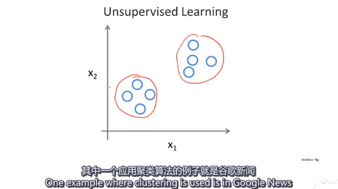
应用：基因分类 person1 person2 person3
facebook 通过Email可以分析出你的朋友圈 市场
找出一堆数据里面的数据结构
- 鸡尾酒会问题
混声中分离音频
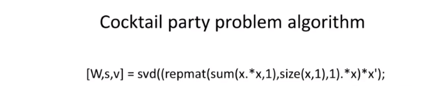
2.1房价预测小例子
hypothesis 预测函数
cost function 代价函数（损失函数）
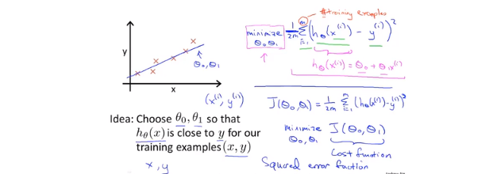
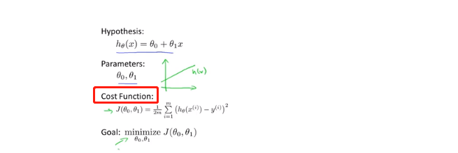
只考虑w的时候
右边的图是预测函数不同的斜率的时候，损失函数的值。w=1时，损失函数最小，此时预测函数最优。
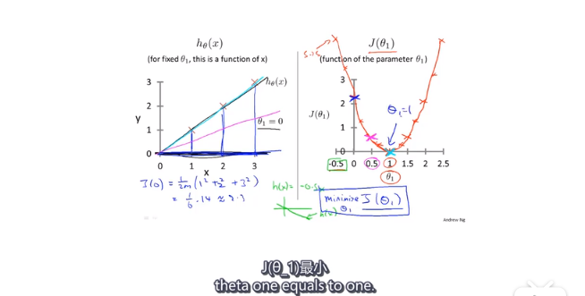
- 当考虑权值w 和偏置b 的时候
这个时候，（w，b)与损失函数值J的图像是一个碗状函数。
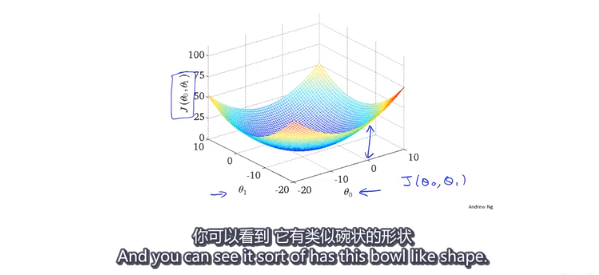
可以用等高线表示：
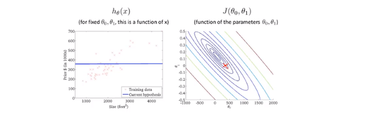
2.5梯度下降
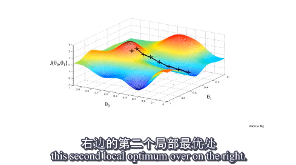
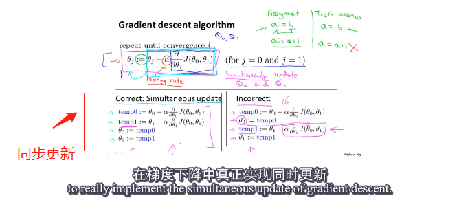
梯度下降公式：
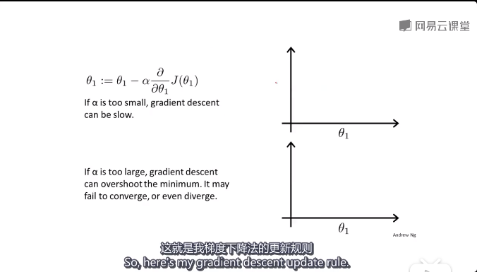
α 为学习率，也就是步长。步长过大的话，损失函数可能会无法收敛或发散
随着梯度下降，越接近局部最优点，下降速度越慢（因为J(θ)的导数接近于0）
2.7线性回归的梯度下降
推导过程：
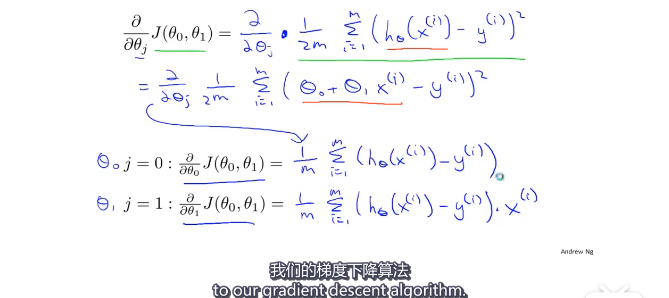
算法：
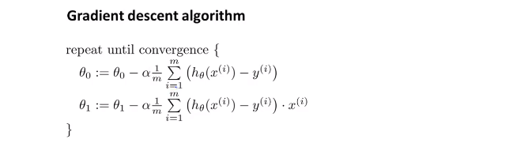
我们要同时更新θ0 和 θ1
batch 梯度下降：（计算每一步的梯度的时候，没有遍历整个数据集，而是按批次，只遍历了一部分子集）这样做可以提高效率。
3.1矩阵和向量
一般用大写字母表示矩阵
矩阵的加减乘除 很简单 没有什么可记的
矩阵的求逆 转置
4.1多元变量（考虑多个输入）
依旧是房价预测问题，不过这次我们有更多的因素需要考虑：这个时候就要使用矩阵了
优化方法：梯度下降法Gradient Descent 对于多元，分别对自变量求偏导即可
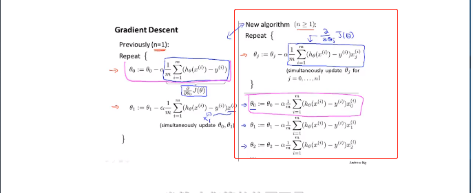
4.4多元梯度下降法
- 特征缩放:Feature Scaling
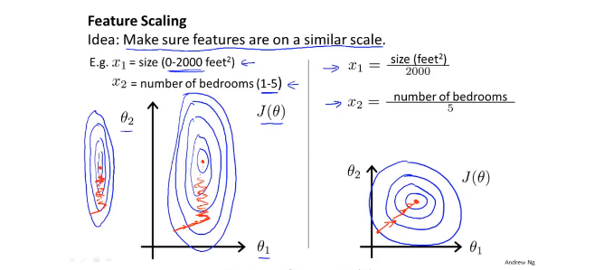
当两个参数的取值范围差别很大的时候，代价函数的等值线就会非常扁平，这个时候梯度下降的速率就会很慢，这个时候可以使用特征缩放（感觉这就是特征值归一化）如右边的图所示。
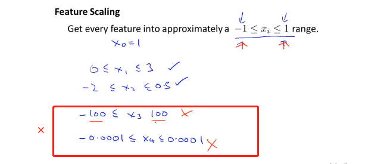
缩放方法：
Mean normalization
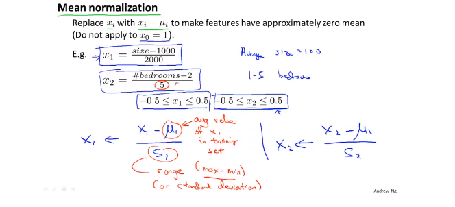
- 学习率
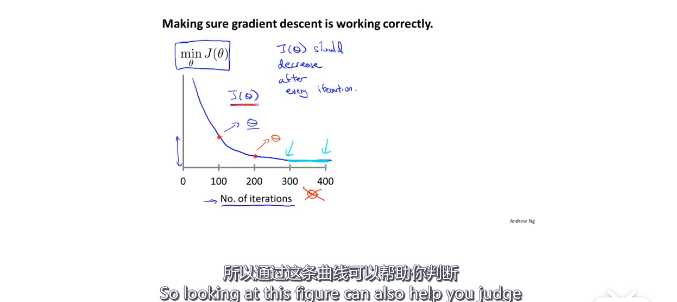
注意：这个图像的横轴是迭代次数，通过这条曲线可以判断代价函数是否收敛。
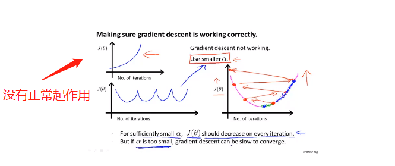
如果下降算法没有正常工作，可以将学习率（步长）降低，可以每隔3倍取值试一下0.001 0.003 0.01......
4.5特征和多项式回归
有时候，按自己的需求定义一些特征量，会得到一个更好的模型：这里是将房屋的height wide 两个特征量，用area一个特征量来表示
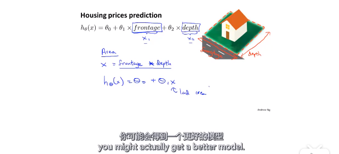
选择怎样的多项式去拟合数据？
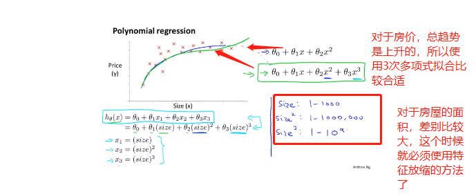
对于房价，我们可以使用三次多项式，也可以使用其它合适的曲线拟合，根号函数 具体如何选择 要根据具体背景
4.6正规方程
对于多元的代价函数，求其最小值，可以对其偏导数都为零，解出相应的θi ：
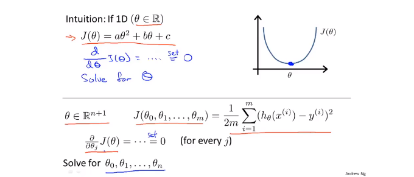
但是这样做过程可能会非常复杂。我们可以采用其他的方法：（额外加的一列1是偏置项）
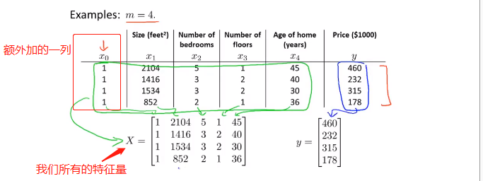
我们可以使用下面的这个方法来计算θ
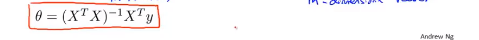
推导过程：
design matrix 设计矩阵X
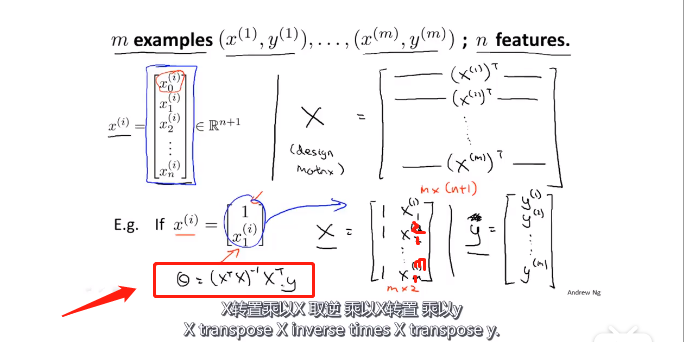
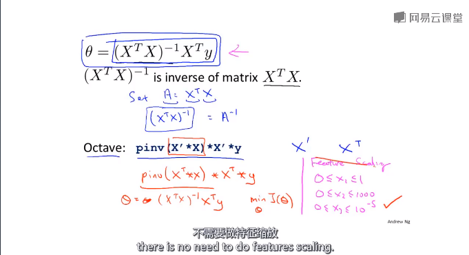
使用正规方程不需要使用特征缩放
梯度法和正规方程优缺点比较：
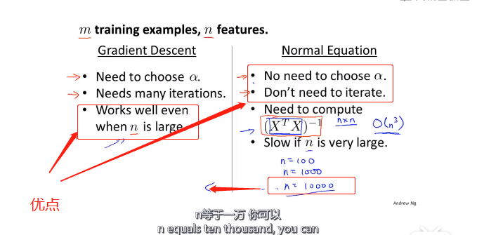
公式推导过程
目标任务
其中：
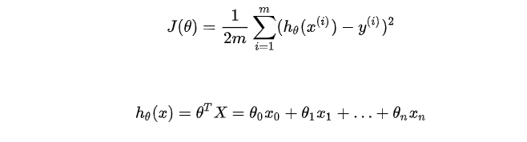
具体过程：
- 将代价函数的向量表达式转成矩阵表达式
- X为m行n列（m个样本个数，n个特征个数）
- 为n行1列的矩阵
做变换：
在进行求解偏导的过程中会用到的公式
- 求导
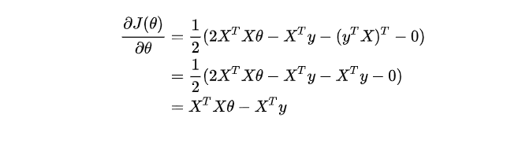
令上面的导数等于0，得到θ
4.7正规方程不可逆的时候怎么办
XXT不可逆的时候，虽然这种情况很少发生。（即使发生，也可以用pinv求伪逆）
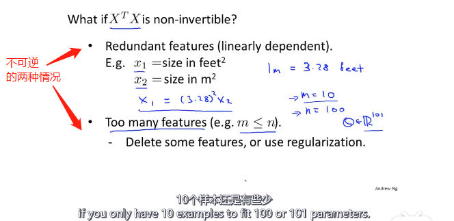
样本数据少，待确定参数多的时候，就会出现正规方程不可逆的情况。可删除一些无关紧要的特征量。
5.1Octave基本使用
和MATLAB差不多可以参考网址：
5.2读取数据
size（M） 可以查看矩阵M的维度
length(M) 可以查看矩阵元素的个数
load fileNname可以读取文件
load('fileName') 也可以读取
5.3计算数据
加减乘除
5.4数据绘制
xxxxxxxxxx101t=[0:0.01:0.98];2y1=sin(2*pi*4*t);3plot(t,y1)4hold on5y2=cos(2*pi*4*t);6plot(t,y2)7xlabel('time')%加一些标签8ylabel('value')9legend('sin','cos')%加图标10title('my plot')%加title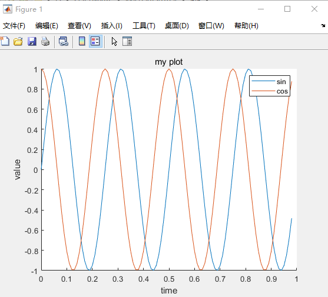
xxxxxxxxxx51subplot(1,2,2)%和matplotlib差不多1*2 的窗口 中的第二个2plot(t,y1)3subplot(1,2,1)4plot(t,y2)5axis([0.5,1,-1,1])%加刻度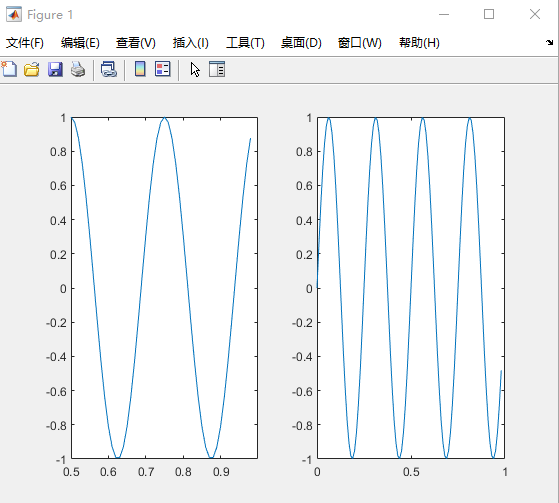
xxxxxxxxxx111A = magic(5)23A =4517 24 1 8 15623 5 7 14 167 4 6 13 20 22810 12 19 21 3911 18 25 2 910%使用逗号 连续调用函数11imagesc(A),colorbar,colormap gray;%加colorbar map类型为gray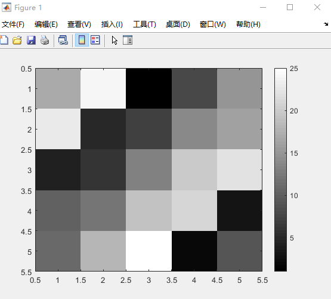
5.5控制语句
xxxxxxxxxx161 i=1;2while true,v(i)=999;3i=i+1;if i==6,break;4end;%结束if5end;%结束while67v89v =1011 列 1 至 612 999 999 999 999 999 641314 列 7 至 101516 128 256 512 1024函数：对于预测房价中的代价函数
xxxxxxxxxx81function J = costFun(x,y,theta)2%COSTFUN 这是用来计算代价函数3% x ,y theta 是x y 和权值4m=size(x,1);%样本的数目 输入有几行5predictions=x*theta;%predictions of hypothesis on all m examples6sqrErrors = (predictions-y).^2;%compute the error7J = 1/(2*m)*sum(sqrErrors);8end测试一下：
xxxxxxxxxx111x=[1 1;1 2;1 3];%设计矩阵 输入三个x 1 2 32y=[1;2;3];%y 1 2 3 相当于三个点（1,1） （2,2）（3,3）3theta =[0;1];%权值 0 145j=costFun(x,y,theta)67j =89 010115.6矢量
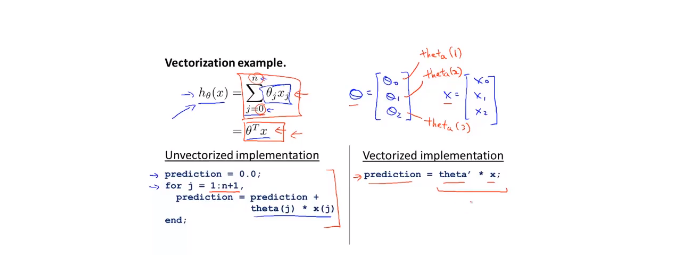
用c++实现：
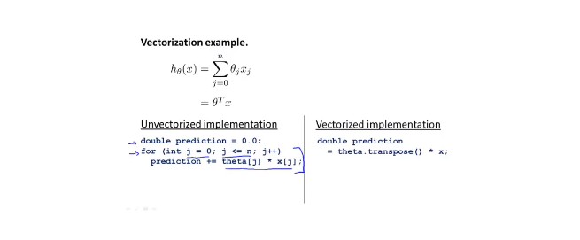
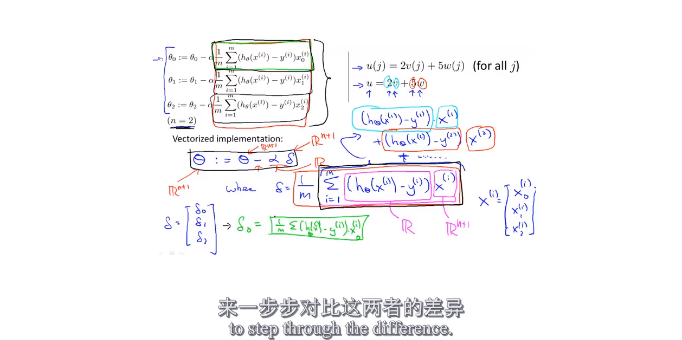
6.1分类问题
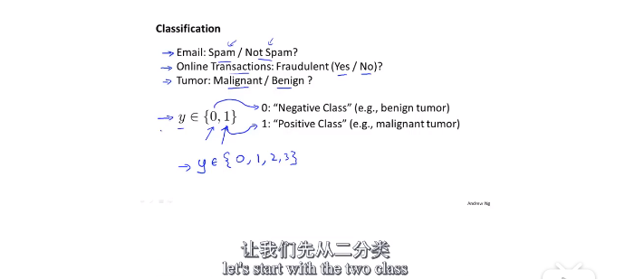
将线性回归方法用于分类问题效果很差。
但是可以使用logistics Regression（逻辑回归）方法：
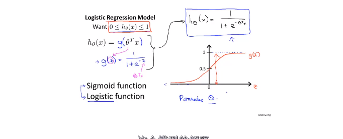
6.2 hypothesis
Logistics function 只输出两个结果，即0和1。
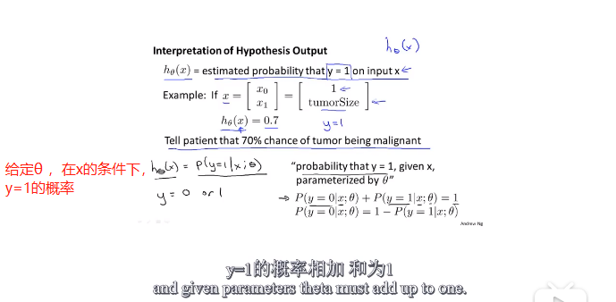
6.3decision boundary（决策边界）
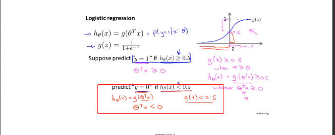
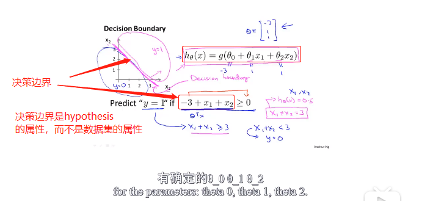
非线性的决策边界：
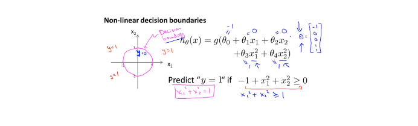
6.4 cost function
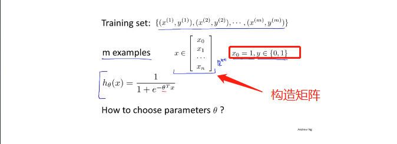
如果使用线性回归里面的cost function的话，代价函数是一个非凸函数，不适合使用梯度下降法进行优化：
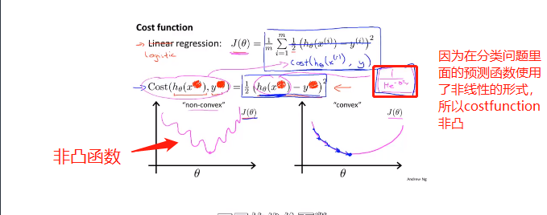
我们要寻找一个更适合的cost function：
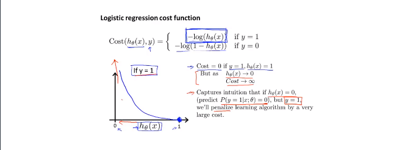
对于这个代价函数的理解：如果对于一组数据，当y=1时，（表明肿瘤存在），我们的预测函数hθ(x)=0，即预测出来的结果是该数据是1（肿瘤存在）的几率是0，即肿瘤不存在。我们的真实值为y=1，y-hθ(x)=1即代表了真实值与预测值的误差（惩罚力度）。
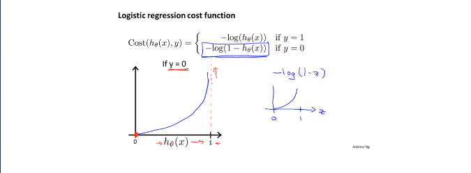当y=0时，cost function使用上面这个。我们的预测函数hθ(x)=0，即预测出来的结果是该数据是1（肿瘤存在）的几率是0，即肿瘤不存在。我们的真实值为y=0，y-hθ(x)=0即代表了真实值与预测值的误差（惩罚力度）。
6.5简化代价函数与梯度下降
将上面的Cost function简化为下面的式子：
（其实就是把原来的分段函数，写成一个函数了，更加紧凑）
next is to fit parameters θ：
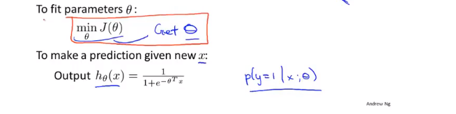
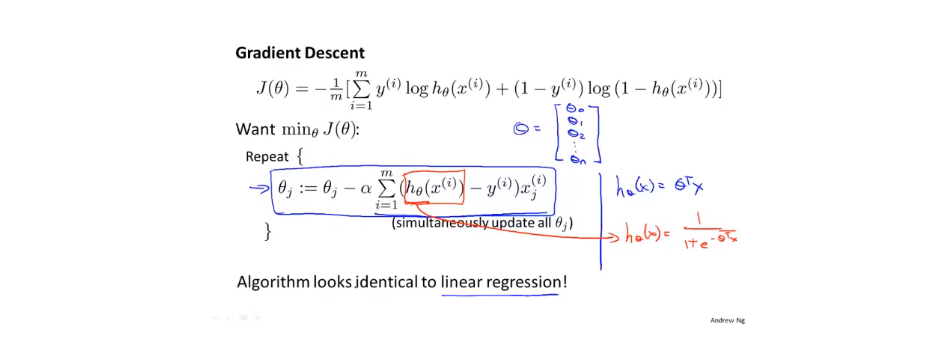
6.6高级优化
optimization algorithm
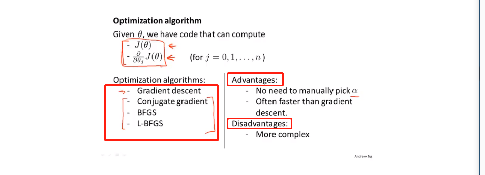
advance algorithm：BFGS ，L-BGGS
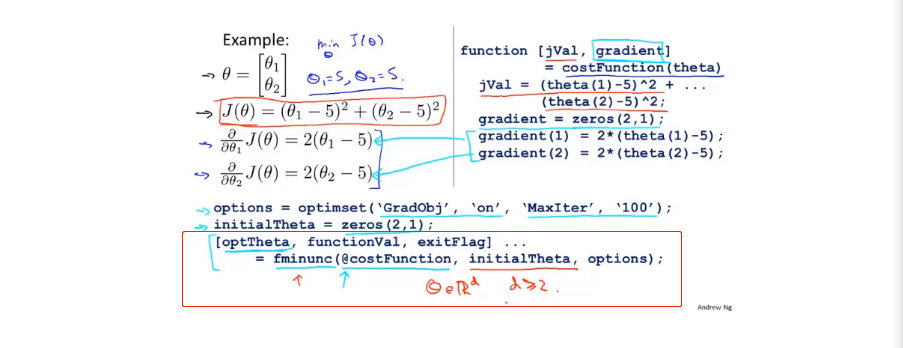
可以使用fminunc()方法对自己函数进行优化 它的最后一个返回值exitFlag，如果为1，说明算法收敛。
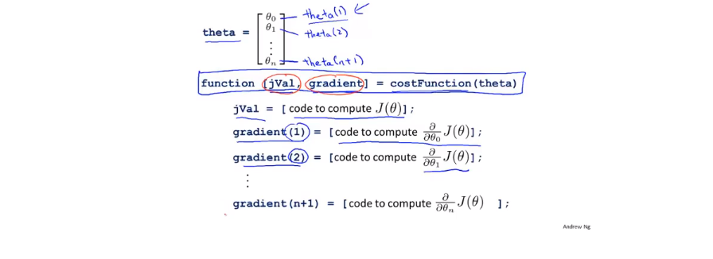
6.7Multiclass classification（多元分类）
就是输出不止0 1 两种情况：
举个栗子：
使用了三个分类器，第一个分类器能够识别出△，第二个分类器能够识别出□，第三个分类器能够识别出×。
总结：
7.1过拟合问题（overfitting problem）
对于线性回归问题：
对于分类问题：
预测函数中的高阶项越多，其拟合曲线越复杂，如第三个图。
7.2代价函数
通过代价函数可以解决过拟合问题：
通过在代价函数里面用一个比较大的数（1000）乘以高阶项系数θ3，θ4，可以使θ3，θ4的值趋近于0，起到降阶的效果。
以上就是正则化的思想：
由于我们不知道哪些项是高阶项，所以我们在后面加上一个正则项，使所有的θ都变小。
λ如果太大，那么对θ的惩罚力度太大，就会造成拟合曲线的欠拟合。
后面将会学到怎样自动的选择λ的值。
7.3线性回归的正则化
以线性回归问题的优化方法为例：
我们把θ0和其他的θ分开进行处理。可以发现，加上正则项的更新函数，其实就是比正常的更新函数多了一个（1-α*λ/m),也就是把θj的值降低了。
当然，使用正规方程，也要面对XTX不可逆的问题。但是可以证明，当λ>1时，那一坨必定可逆。